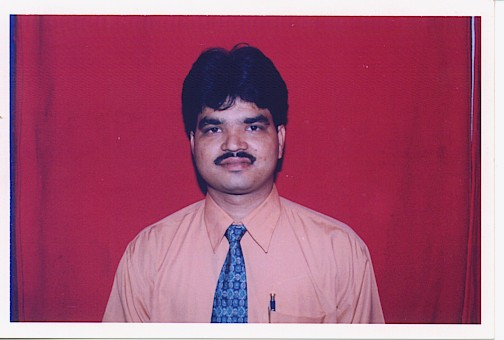
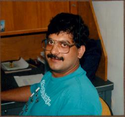
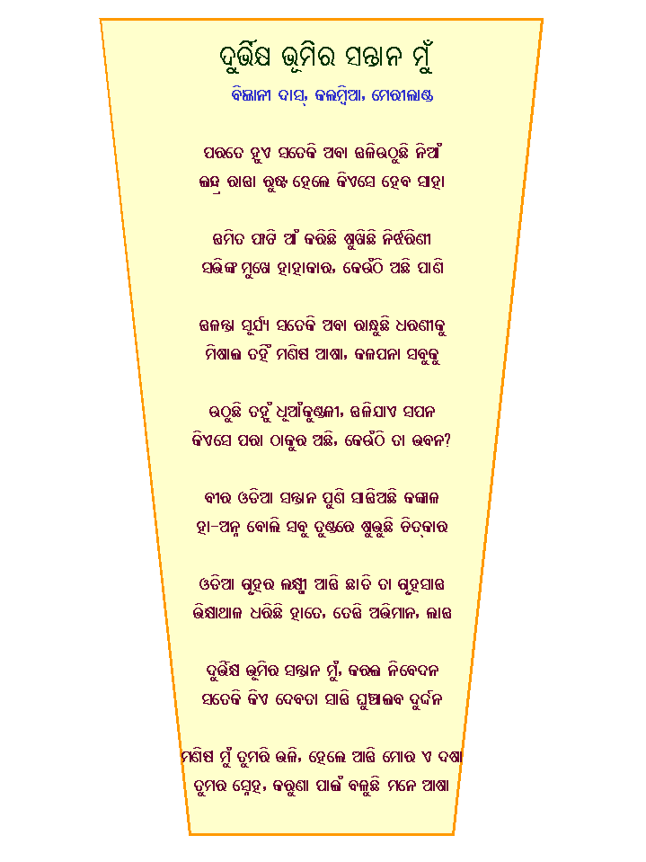
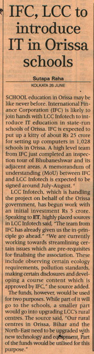

Local archive · read-only HTML
Nandighosha attachment collection
The upload folder preserves 19 files. Six are images; one technical document is available below as a plain HTML reading. Four of these images were not included in the previous stage. File labels come from the archive, and no identities or dates have been inferred from faces.
Read the recovered EJB interview-question sheet
Saved image uploads

Explicitly linked in topic 111.
forum/uploaded/ahimanikya/ahimanikya.jpg

Filename appears in attachment metadata for topic 210; no matching upload link survives in that post.
forum/uploaded/ahimanikya/ammuface_small.jpg


No matching post link or attachment-table row was found. Preserved as an unassigned upload.
forum/uploaded/ahimanikya/manojpanda.jpg


No matching post link or attachment-table row was found. Preserved as an unassigned upload.
forum/uploaded/bapunu/debu.jpg


No matching post link or attachment-table row was found. Preserved as an unassigned upload.
forum/uploaded/bapunu/drought.gif


Explicitly linked in topic 212, 214.
forum/uploaded/scchoudhury/Saturd35.jpg
Attachment recovery record
The attachment table has 24 rows. Twenty-three have a same-named saved file; one file remains missing. A filename and topic number alone are weaker evidence than a complete upload link in a post. Duplicate metadata rows have not been counted as separate files.
- bhasphoto.doc — Job-related attachment; preserved in the separate local source collection, outside this reading edition.
- bismaya-jm.doc — Job-related attachment; preserved in the separate local source collection, outside this reading edition.
- Curriculum Vitae of Sanath Sahu.doc — Job-related attachment; preserved in the separate local source collection, outside this reading edition.
- deepak resume 20010327.doc — Job-related attachment; preserved in the separate local source collection, outside this reading edition.
- Modif Biodata.doc — Job-related attachment; preserved in the separate local source collection, outside this reading edition.
- Resume_Gyanaranjan(Text).txt — Job-related attachment; preserved in the separate local source collection, outside this reading edition.
- SidsResNew.doc — Job-related attachment; preserved in the separate local source collection, outside this reading edition.
- Susantaword_v5.doc — Job-related attachment; preserved in the separate local source collection, outside this reading edition.
- Suvendu_Mishra_RV.doc — Job-related attachment; preserved in the separate local source collection, outside this reading edition.
- resume.doc — Job-related attachment; preserved in the separate local source collection, outside this reading edition.
- san_pat.doc — Job-related attachment; preserved in the separate local source collection, outside this reading edition.
- readme.txt — Scanner software readme; unrelated to the post’s news attachment.
Still missing: PADMA_RESUME.doc (topic 172). No exact filename match was found in the indexed local files or archive members.
The source collection retains the original files and checksums. This page does not reinstate download authentication, forms or editing features.
Source notes
MyCommunity/nandighosha.org.zip!/forum/uploaded/ and forum/tools/snitz_forums_2000.mdb
Table: FORUM_USERFILES · record IDs: 1, 2, 3, 4, 5, 6, 7, 8, 9, 10, 11, 12, 14, 15, 16, 17, 18, 19, 20, 21, 22, 23, 24, 25